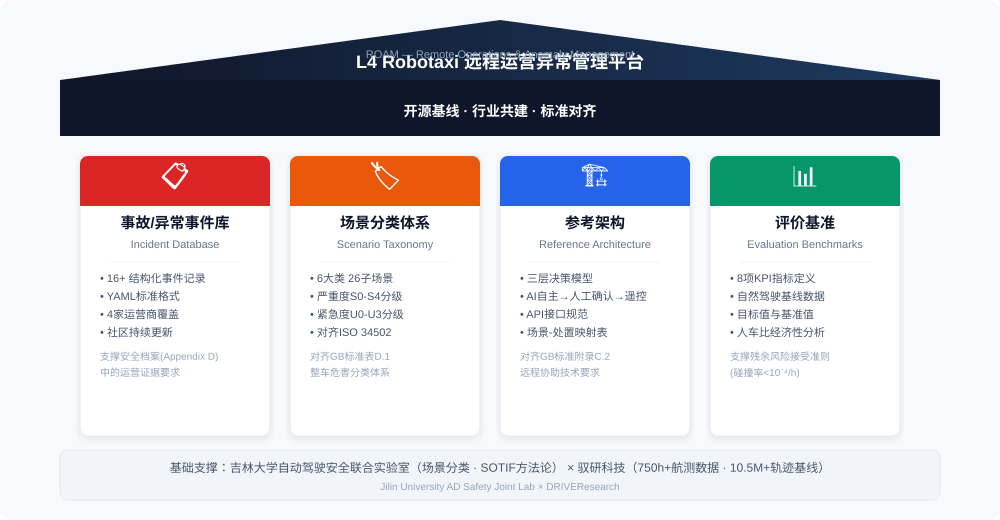
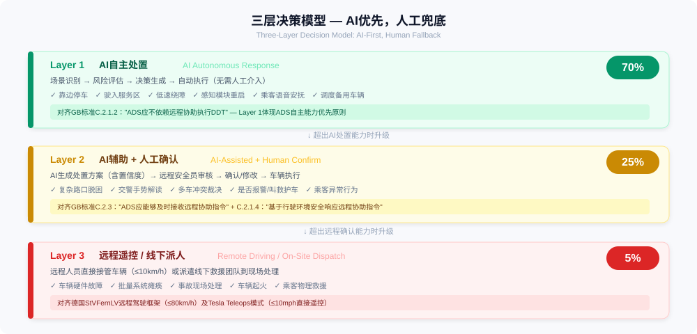

RoboTaxi Operations Anomaly Management
L4+ 无人驾驶出租车远程运营异常管理 — 开源事故数据库、场景分类体系与参考架构
Open-Source Incident Database, Scenario Taxonomy & Reference Architecture for L4+ Robotaxi Remote Operations

| 日期Date | 运营商Operator | 地点Location | 事件描述Description | 场景Type | 严重度Sev. |
|---|---|---|---|---|---|
| 2026-03-31 | 百度ApolloBaidu Apollo | 武汉Wuhan | 近百辆车高架路段同时熄火，乘客被困2小时，SOS无人应答~100 vehicles mass shutdown on elevated highways, passengers trapped 2hrs | A1 F1 | S3 |
| 2026-03-07 | Waymo | 凤凰城Phoenix | 横穿8车道时停在路中央，乘客尖叫Attempted 8-lane crossing, stopped mid-road | C3 | S2 |
| 2026-03-01 | Waymo | 奥斯汀Austin | 枪击案现场堵住救护车Blocked ambulance at mass shooting scene | E3 | S3 |
| 2025-12 | Waymo | 旧金山San Francisco | 停电导致车队大规模瘫痪，应急热线等待2.5小时Power outage: mass fleet paralysis, 2.5hr emergency wait | A3 | S3 |
| 2025-05 | Pony.ai | 北京Beijing | 测试车辆偏离道路后起火Test vehicle caught fire after veering off road | D3 | S2 |
| 2023-10 | Cruise | 旧金山San Francisco | 车辆碾压并拖拽行人20英尺，运营全面暂停Ran over and dragged pedestrian 20 feet | C5 | S4 |
展示6条典型事件。在GitHub上查看全部16条 →6 representative incidents. View all 16 on GitHub →

完整技术文档见 reference-architecture.mdFull docs: reference-architecture.md
百度Apollo（萝卜快跑）、小马智行、文远知行等无人驾驶出租车服务运营商Baidu Apollo Go, Pony.ai, WeRide and other robotaxi service operators
上汽、一汽、长安、广汽等推出L4 Robotaxi方案的车企SAIC, FAW, Changan, GAC deploying L4 robotaxi solutions
如Vay、Ottopia等提供远程驾驶/远程协助技术方案的公司Vay, Ottopia and other remote driving technology companies
工信部、公安部、各地方交通管理部门，以及高校/研究机构MIIT, MPS, local authorities, universities and research institutions
| 标准Standard | 全称Full Title | 与ROAM的关联Relevance |
|---|---|---|
| GB XXXXX | 智能网联汽车 自动驾驶系统安全要求（征求意见稿）ICV ADS Safety Requirements (Draft, 2026) | 附录C.2定义L4远程协助要求；附录D定义安全档案C.2: L4 remote assistance; D: Safety Case |
| UN GTR on ADS | GRVA自动驾驶系统全球技术法规草案GRVA draft GTR (2026) | "称职且谨慎的人类驾驶员"安全基线"Competent and careful human driver" baseline |
| ISO 34502 | 道路车辆 — 自动驾驶系统测试场景Test scenarios for ADS (2022) | 场景分类体系对齐Scenario taxonomy alignment |
| ISO 21448 | 道路车辆 — 预期功能安全（SOTIF）SOTIF (2022) | 未知不安全场景识别Unknown unsafe scenario identification |
| ISO 22737 | 低速自动驾驶系统LSAD for predefined routes (2021) | 含"无人驾驶运营调度员"角色Includes DOD role definition |
| StVFernLV | 德国道路交通远程驾驶条例（2025-12）German Remote Driving Ordinance (2025) | 欧洲首个远程驾驶法律框架Europe's first teleop driving framework |
完整13项标准映射见 related-standards.md · 中文对齐分析见 standard-alignment-cn.mdFull mapping: related-standards.md
ROAM 是社区共建项目。你可以提交新的事件记录、完善场景分类、改进参考架构，或贡献基线数据。ROAM is community-driven. Report incidents, improve taxonomy, enhance architecture, or contribute data.
贡献指南Contribution Guide